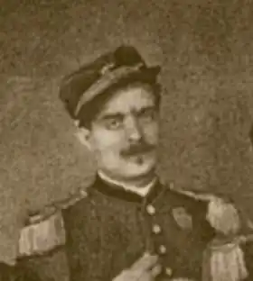

ДЖОВАНЬЙОЛІ, Рафаелло (Giovagnoli, Raffaello — 13.03.1838, Рим — 15.08. 1915, там само) — італійський письменник.У двадцять один рік вступив добровольцем в армію, а потім став соратником Д. Гарібальді. Обирався депутатом парламенту. Крім літературної діяльності займався викладанням.
Джованьйолі створив романи на теми сучасного життя ("Евеліна" — "Evelina", 1868; "Наталіна" — "Natalina", 1878). Відомим став завдяки історичним романам "Опімія" ("Opimia", 1885), "Плаутілла" ("Plautilla", 1878), "Сатурніно" ("Saturnino", 1879), "Мессаліна" ("Messalina", 1885). У цих романах автор демонструє відмінне знання побуту й культури Стародавнього Риму. Заклики до боротьби проти тиранії та прагнення до соціальної справедливості є основоположними для історичних романів Джованьйолі. Історичні праці "Чічероваккіо та дон Пірлоне" ("Ciceruacchio e don Pirlone", 1894), "Пеллегріно Россі та римська революція" ("Pellegrino Rossi e la rivoluzione romana":V. 1-3, 1898-1911).
Найпопулярнішим став роман "Спартак" ("Spartaco", 1874), який є одним із останніх зразків італійського історичного роману епохи Рисорджименто — національно-визвольного руху за створення єдиної, незалежної держави в Італії, початок якого припадає на останні десятиліття XVIII ст., а завершення — 70-і pp. XIX ст., коли історичний роман втрачає свою славу. Роман "Спартак" присвячений повстанню давньоримських гладіаторів і рабів у І ст. до н. є. І хоча "Спартак" звернений до історії, зв'язок минулого зі сучасністю безсумнівний. Визвольний рух, очолюваний Дж. Гарібальді, вплинув на твір Джованьйолі. Ідеї, які висловлює Спартак, були близькими багатьом прихильникам Гарібальді. Для історичного італійського роману характерне звернення до прикладів національного героїзму. Джованьйолі відходить від цієї традиції. У його творі Рим епохи Цезаря — твердиня тиранії.Незважаючи нате, що "Спартак" з'явився через 50 років після роману А. Мандзоні "Заручені" (1821—1823), підходи двох авторів різні. Для Мандзоні історія — у її звичаях, у Джованьйолі — в значних історичних рухах; Мандзоні багато уваги приділяє психології звичайної людини, а для Джованьйолі важливою є проблема історичної особистості, змалювання народного руху. Основну увагу автор приділяє образу Спартака, трактуючи його в романтичному плані. Спартак зображений у таких ситуаціях, в яких якнайповніше проявляється його відданість справі свободи, безкорисливість, віра в майбутнє визволення. Патетичний стиль роману посилює це звучання. Пафос розповіді поєднується з важливістю подій, що відбуваються. Головний герой втілює риси етичного ідеалу Джованьйолі: силу, мужність, вроду, розум, чуйність. Образ головного героя виник під впливом особистості Гарібальді. Повстання під проводом Спартака перегукується із сучасними Джованьйолі подіями, з боротьбою, втіленою в гарібальдійському русі. Автор зображує Спартака перш за все в історичній і суспільній сферах. Інтимна лінія також підкреслює велич головного героя і привносить утвір романтичне звучання. Важлива в романі проблема історичної особистості. Створені характери Цезаря, Сулли, Катіліни, Катона. Дві життєві філософії, два світосприйняття окреслюються в результаті зіставлення Цезаря та Спартака. Багато характерів, побудованих за принципом романтичної типізації, ґрунтуються на поєднанні контрастних рис. Роман має ряд недоліків: зустрічаються фактичні помилки, характери дещо схематичні, деякі сцени надто розлогі, мова героїв інколи надто патетична, їхні вчинки не завжди виправдані.Чим же пояснюється популярність роману? Хоча роман присвячений минулому, створювався він під впливом особистого життєвого досвіду. Джованьйолі орієнтувався на своїх сучасників і однодумців. Слово "свобода" було написане і на прапорі гарібальдійців, і на прапорі повсталих гладіаторів. Давнину Джованьйолі розглядав через призму сучасності. У "Спартакові" наявні елементи пригодницького роману, на фоні панорами побуту та звичаїв Стародавнього Риму захопливо розгортається сюжет — повстання Спартака. Роман Джованьйолі неодноразово перевидавали та перекладався багатьма мовами. Українською мовою скорочені переклади роману "Спартак" здійснили Г. Хоткевич (1924) і С. Ковчанюк (1937). Повний переклад твору зробили П. Мохор та А. Іллічевський. І. Коцоєва